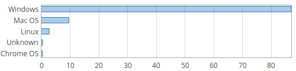

De GM/NAA à Linux et Windows en passant par Unix et MS DOS, une histoire des systèmes d'exploitation
Deuxième partie :
Les systèmes d'exploitation de nos jours
Les systèmes d'exploitation de 2000 à aujourd'hui
De nos jours, en 2020, les systèmes d'exploitation pour ordinateur de bureau les plus répandus
appartiennent aux deux grandes familles Unix et Windows. Si Windows domine le marché depuis
plus d'une décénie, les systèmes Unix se développent et gagnent en part de marché.

Parts de marché des systèmes d'exploitation sur ordinateur en Août 2020, d'après netmarketshare.com
Windows
Qu'est-ce que Windows ?
Windows est un système d'exploitation créé par Microsoft en 1985. Il est surtout destiné aux ordinateurs PC, malgré le fait que certaines versions soient destinés aux téléphones ou aux tablettes, et s'accapare près de 90% du marché des systèmes d'exploitation PC.
Windows était anciennement l'interface graphique de MS DOS, le système d'exploitation développé par Microsoft initialement pour les IBM PC.
Microsoft
Microsoft est une multinationale informatique fondée en 1975 pas Bill Gates et Paul Allen. Elle emploie plus de 150 000 personnes dans 120 pays et son chiffre d'affaire s'élevait à plus de 110 milliards de dollards en 2018.
Microsoft a eu du succès dans les systèmes d'exploitation (MS-DOS et Windows), les sites web (Bing, Linkedin, Outlook) et les consoles de jeu vidéo (Xbox). Bill Gates, son fondateur, a été homme le plus riche du monde grâce à Windows de 1996 à 2007, en 2009, en 2014 et en 2016. Il se consacre depuis 2007 à sa fondation humanitaire.
Historique de Windows
Windows MS-DOS, créé en 1985, a connu 5 « branches » depuis ses débuts.
Branche 1 (1985-1993) : Dite branche 16 bits, couvre Windows 1 à 3,11. Elle n'est plus accessible au grand public depuis 1993, mais une émulation reste disponible.
Branche 2 (1993) : Dite Windows NT, c'est la branche qui est destinée aux ordinateurs personnels. Elle contient notamment Windows XP, Windows Vista et Windows 7 à 10.
Branche 3 (1995-2001) : Dite branche 9x, cette branche a commencé avec Windows 95 et avait pour projet de remplacer la branche NT pour les ordinateurs personnels. Elle fut néanmoins annulée en 2001 avec la création de Windows NT 5.1, connu sous le nom de Windows XP, plus stable et moins vulnérable.
Branche 4 (1996) : Dite branche CE, elle est apparue en 1996 avec WinCE, et la dernière version est Windows CE 6.0, apparue en 2006. Elle est destinée aux Windows Phone, des téléphones portables, ainsi qu'à des systèmes embarqués ou des PC de poche, des ordinateurs de la taille d'un smartphone.
Branche 5 (2012, 2015) : Branche RT, elle a été créée en 2012, en même que Windows 8, destinée pour certaines tablettes. Elle n'est disponible que préinstallée sur les produits. Elle fut annulée en 2015 à cause de son manque de compatibilité avec beaucoup d'applications.
Qu'est-ce qui cause son succès ?
La plus grande raison pour laquelle Windows est le système d'exploitation le plus utilisé avec les ordinateurs est le fait qu'il soit vendu avec l'ordinateur, contrairement à Linux qui doit être installé, qui est par ce fait moins connu du grand public. La célébrité de Windows a donc créé un « effet boule de neige » chez le grand public qui fait que les gens ne s'intéressant pas à l'informatique associent Windows au seul système d'exploitation disponible.
Unix
Qu'est-ce qu'Unix ?
Unix est un système d'exploitation créé en 1970 par Kenneth Thompson et Dennis Ritchie en travaillant pour AT&T Corporation, l'ancien leader américain en télécommunications. Particulièrement répandu dans les milieux universitaires au début des années 19802, il a été utilisé par beaucoup de start-ups fondées par des jeunes entrepreneurs à cette époque et a donné naissance à une famille de systèmes, dont les plus populaires à ce jour sont les variantes de BSD ainsi que GNU/Linux, Android, iOS et MacOS.
Les familles d'Unix
Unix possède beaucoup de branches, d'une part à cause de la liberté de modification de son code qui le rend libre, et aussi à cause de la division entre l'USL (Unix System Laboratories) et AT&T. Le tableau ci-dessous réportorie toutes ses branches, leurs dates de création, ainsi que comment elles sont liées :
Auteurs : Eraserhead1, Infinity0, Sav_vas, CC BY-SA 3.0
(Android, qui représente la majorité des systèmes d'exploitation pour téléphones portables, est compris dans Linux)
Linux
Linux est avec MacOS et iOS, l'un des systèmes d'exploitation les plus connus basés sur Unix. Il est destiné aux ordinateurs et aux téléphones portables grâce à Android. Sa première caractéristique est que son code est ouvert, c'est-à-dire qu'il peut être modifiable facilement et qu'il est accessible à tous, ce qui est la première raison pour laquelle Android est le premier sur le marché des téléphones portables. En effet beaucoup de marques (Wiko, Asus, Huawei, Samsung...) gardent le noyau en modifiant un peu le code. D'autre part cela fait que Linux est gratuit pour les ordinateurs, contrairement à Windows, malgré le fait que Windows est presque tout le temps acheté avec l'ordinateur. On peut donc conclure que l'ouverture du code de Linux est le plus grand facteur de son succès.
Les PC sont-ils les seuls à utiliser un OS ?
Les systèmes d'exploitation ne sont pas utilisés que sur les ordinateurs. Il existe également des OS pour d'autres machines dont voici quelques exemples :
Les smartphones et tablettes électroniques : Androïd (développé par Google à partir d'un noyau Linux), etc...
Les consoles de jeux : OrbisOS (par Sony, à partir d'un noyau Unix), etc...
Les téléviseurs : LG webOS (noyau Linux), etc...
Les décodeurs TV : IOS (Apple), etc...
Les baladeurs numériques (MP3...) : IOS (par Apple), etc...
Les systèmes embarqués, les automates industriels : QNX (par Quantum Software Systems, OS de type Unix), etc...
Les superordinateurs et supercalculateurs : Solaris (par SUN Microsystems à partir d'un noyau Unix), etc...
Les serveurs et ordinateurs centraux : OpenVMS (par DEC), etc...
NB : Pour les serveurs, les systèmes d'exploitation de la famille UNIX sont assez majoritaires.
Les systèmes d'exploitation sont donc la couche externe de tout système informatique, et l'un des premiers programmes exécutés par la machine.
Les Pirates de la Silicon Valley, un téléfilm américain réalisé par Martyn Burke en 1999, qui relate de manière romancée mais inspirée de temoignages les débuts de la micro-informatique aux États-Unis, et la rivalité entre les PDG d'Apple et de Microsoft dans les années 70 et 80.
Ce film dénonce la manière dont les deux entreprises ont copié leurs idées et celles d'autres sociétés comme Xeros.
À propos de Linux
https://youtu.be/8PtLsftCC70 :
Pour mieux connaître le système d'exploitation Linux, 10 raisons de passer à Linux.

{kind=link}